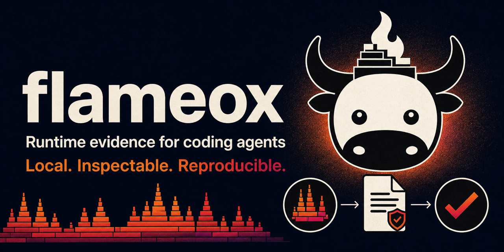

导读：是什么 / 怎么用 / 亮点
- 是什么：Python 写的 MCP 服务器 + CLI，统一封装 pstats、pyperf、memray、Perfetto、Nsight Compute/Systems、Compute Sanitizer、coverage、OTLP、V8 profile、AIPerf 等，让 Claude Code / Codex 等编程智能体拿到有边界、带出处的运行时证据去定位热点。
- 怎么用：
npx flameox@latest setup写入 MCP 客户端配置；或uvx flameox analyze …/uvx flameox capture …。 - 亮点：不建工作区、不改项目文件、无托管服务；区分「观测/推导/推断」；证据可选按 SHA-256 持久化；明言 profile 不能证明因果或提速。
为编程智能体提供有界的本地运行时证据。
Flameox 协调 profiler、基准测试工具、trace 处理器与直接的本地目标。它把明确给定的产物或命令转换为有界证据，同时让持久保存保持可选。假设与实验由智能体选择；Flameox 记录观测到的输入、执行出处、类型化证据、覆盖范围与局限。
无需初始化工作区，也没有项目配置要维护。分析时传入确切的产物路径；采集时传入明确的 argv 加绝对工作目录。Flameox 不搜索父目录、不编辑项目文件，也不提供托管服务。
快速开始
用全局 setup 命令配置 MCP 客户端：
npx flameox@latest setupsetup 检测受支持的客户端并询问要更新哪些配置。自动化时可显式指定，如 --client codex --yes 或 --all --yes；--dry-run 只报告路径与动作而不写入。setup 保留无关配置、不改项目文件。详见 npm 包指南。
更新已有的 MCP 注册：
npx flameox@latest updateupdate --check 只报告可用更新。更新会保留各客户端的 provider 扩展与设置，在改动版本锁定前先验证新环境，并报告哪些客户端需重启或重连。--client codex 选单个客户端，--version 0.2.8 指定版本（含回滚）。Python CLI 同样提供 flameox update。
直接用 CLI 时，传入确切产物路径或明确命令：
uvx flameox analyze preview_artifact /absolute/path/to/artifact.json
uvx flameox capture --provider direct --cwd "$PWD" -- python benchmark.py手动启动 stdio MCP 服务器：
uvx flameox mcp serve本地开发：克隆仓库、安装开发依赖，再查看可用工具：
git clone https://github.com/morluto/flameox.git
cd flameox
uv sync --extra dev --extra memory --extra trace --extra cpu
uv run flameox mcp inspect证据与存储
分析与未保存的采集使用有界的会话暂存区；analysis_id 在被淘汰或服务器停止时失效。显式保存会创建用户级 Flameox 数据目录，按 SHA-256 存放原始字节与规范化证据包；可用 FLAMEOX_DATA_DIR 改位置。保存是可选的，且不意味着保留完整控制台输出。
Flameox 区分观测、推导、推断三类结论。profile 只引导探索，不确立因果或性能提升。确证性结论需要有代表性的负载、事先声明的指标与估计量、相容的身份标识、保存的样本，以及语义预言机。
MCP
MCP 服务器不绑定工作区，通过与 CLI 相同的操作注册表暴露命名的分析与采集工具。分析工具接受显式来源；采集工具接受类型化目标与 provider；schema 直接暴露各操作专属字段。用 flameox mcp inspect 查看目录，--tool TOOL_NAME 看单个工具的 schema 与示例。完整契约见 接口指南。
工具内联返回完整的有界结果，含失败与恢复动作。保存的证据有持久 evidence_id；inspect_evidence 内联返回脱敏元数据与重放来源。
采集接受 argv 而非 shell 字符串。直接目标需提供绝对工作目录与有界的环境变量覆盖。结果可能带 next_page，原样重放其中的分析工具与参数即可；续页读取已收集的产物，不重跑目标。MCP 工作隶属当前请求，取消直接生效，重启后不留游离任务。
文档
- 架构：进程与包边界
- 存储与证据：保存与出处
- 调查：实验、对比与证据质量
- 适配器：provider 兼容性与集成策略
- 运行时安全：限额、恢复、完整性与隐私
- 接口：CLI 与 MCP 契约
- 测试：测试选集与已知证明缺口
开发
需要 Python 3.12+，使用已提交的 uv.lock。见 CONTRIBUTING.md。
uv run ruff check src tests tools
uv run ruff format --check src tests tools
uv run mypy src tests tools
uv run pytest -qFlameox 以 MIT 许可证发布。

许可与署名
原作 Copyright (c) 2026 morluto，MIT License，完整条款见 LICENSE。图片来自原仓库 docs/assets/。原仓库另有官方 README.zh-CN.md。
下架请求：提交 issue